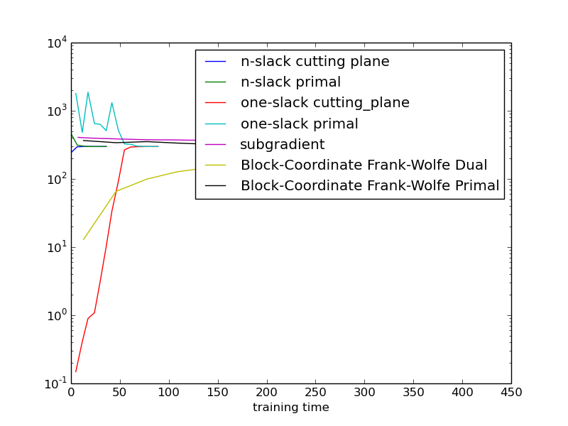

Showing the relation between cutting plane and primal objectives, as well as the different algorithms. We use exact inference here, so the plots are easier to interpret.
As this is a small toy example, it is hard to generalize the results indicated in the plot to more realistic settigs.
Script output:
Training n-slack dual structural SVM
objective converged.
Training primal subgradient structural SVM
Iteration 0
dual: 12.905323, dual_gap: 353.099200, primal: 366.004523
Iteration 1
Iteration 2
Iteration 3
Iteration 4
dual: 65.729780, dual_gap: 274.263256, primal: 339.993036
Iteration 5
Iteration 6
Iteration 7
Iteration 8
dual: 99.470838, dual_gap: 253.062016, primal: 352.532854
Iteration 9
Iteration 10
Iteration 11
Iteration 12
dual: 127.472797, dual_gap: 207.960428, primal: 335.433225
Iteration 13
Iteration 14
Iteration 15
Iteration 16
dual: 146.194352, dual_gap: 176.730367, primal: 322.924719
Iteration 17
Iteration 18
Iteration 19
Iteration 20
dual: 161.152032, dual_gap: 158.446539, primal: 319.598571
Iteration 21
Iteration 22
Iteration 23
Iteration 24
dual: 174.092302, dual_gap: 147.058808, primal: 321.151111
Iteration 25
Iteration 26
Iteration 27
Iteration 28
dual: 185.293137, dual_gap: 133.735826, primal: 319.028964
Iteration 29
Iteration 30
Iteration 31
Iteration 32
dual: 195.477888, dual_gap: 122.434803, primal: 317.912692
Iteration 33
Iteration 34
Iteration 35
Iteration 36
dual: 204.154733, dual_gap: 113.132092, primal: 317.286825
Iteration 37
Iteration 38
Iteration 39
Iteration 40
dual: 211.713687, dual_gap: 104.896549, primal: 316.610236
Iteration 41
Iteration 42
Iteration 43
Iteration 44
dual: 218.434135, dual_gap: 97.955905, primal: 316.390040
Iteration 45
Iteration 46
Iteration 47
Iteration 48
dual: 224.472323, dual_gap: 91.766779, primal: 316.239103
Iteration 49
Calculating final objective.
Python source code: plot_svm_objectives.py
import numpy as np
import matplotlib.pyplot as plt
from pystruct.models import GridCRF
from pystruct.learners import (NSlackSSVM, OneSlackSSVM, SubgradientSSVM,
FrankWolfeSSVM)
from pystruct.datasets import generate_crosses_explicit
X, Y = generate_crosses_explicit(n_samples=50, noise=10, size=6, n_crosses=1)
n_labels = len(np.unique(Y))
crf = GridCRF(n_states=n_labels, inference_method="lp")
n_slack_svm = NSlackSSVM(crf, check_constraints=False,
max_iter=50, batch_size=1, tol=0.001)
one_slack_svm = OneSlackSSVM(crf, check_constraints=False,
max_iter=100, tol=0.001, inference_cache=50)
subgradient_svm = SubgradientSSVM(crf, learning_rate=0.001, max_iter=20,
decay_exponent=0, momentum=0)
bcfw_svm = FrankWolfeSSVM(crf, max_iter=50, verbose=2, check_dual_every=4)
#n-slack cutting plane ssvm
n_slack_svm.fit(X, Y)
# 1-slack cutting plane ssvm
one_slack_svm.fit(X, Y)
# online subgradient ssvm
subgradient_svm.fit(X, Y)
# Block coordinate Frank-Wolfe
bcfw_svm.fit(X, Y)
# don't plot objective from chached inference for 1-slack
inference_run = ~np.array(one_slack_svm.cached_constraint_)
time_one = np.array(one_slack_svm.timestamps_[1:])[inference_run]
# plot stuff
plt.plot(n_slack_svm.timestamps_[1:], n_slack_svm.objective_curve_,
label="n-slack cutting plane")
plt.plot(n_slack_svm.timestamps_[1:], n_slack_svm.primal_objective_curve_,
label="n-slack primal")
plt.plot(time_one,
np.array(one_slack_svm.objective_curve_)[inference_run],
label="one-slack cutting_plane")
plt.plot(time_one,
np.array(one_slack_svm.primal_objective_curve_)[inference_run],
label="one-slack primal")
plt.plot(subgradient_svm.timestamps_[1:], subgradient_svm.objective_curve_,
label="subgradient")
plt.plot(bcfw_svm.timestamps_[1:], bcfw_svm.objective_curve_,
label="Block-Coordinate Frank-Wolfe Dual")
plt.plot(bcfw_svm.timestamps_[1:], bcfw_svm.primal_objective_curve_,
label="Block-Coordinate Frank-Wolfe Primal")
plt.legend()
plt.yscale('log')
plt.xlabel("training time")
plt.show()
Total running time of the example: 849.37 seconds